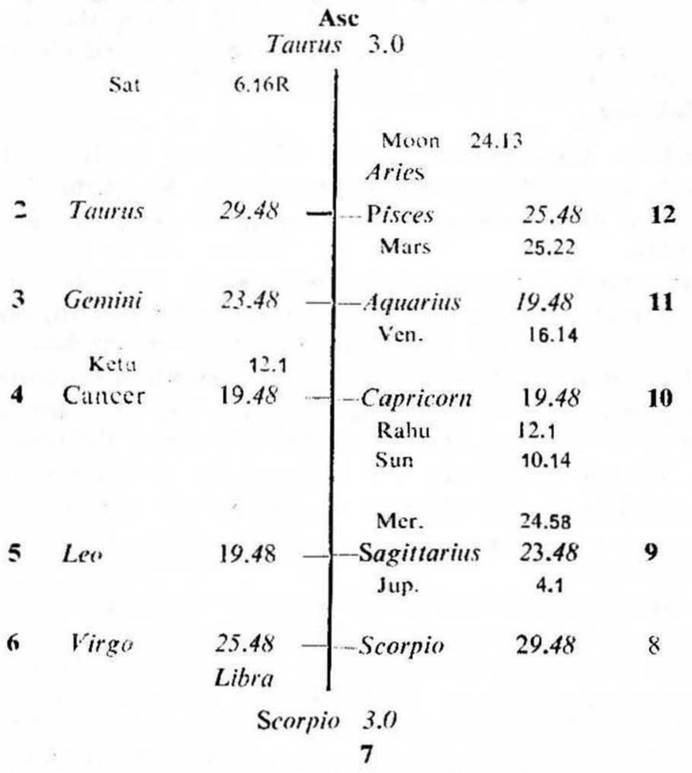
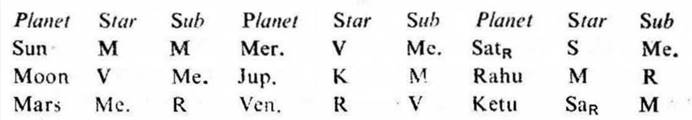
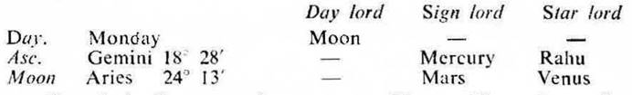

Question. When shall I be able to sell my house?
Number. 25 (out of 249)
Place of Judgment. 22°N 41′, 72°E 55′.
Time of Judgment. 24-1-1972, Monday: 4-35 p.m. I.S.T.


If the cuspal sub lord of 10 be the significator (i. e. in the star of the occupant or owner) of 3 or 10 the house can be sold off during the joint period of the significators of 3, 5 and 10.
In this horary map Moon owns 4 and occupies 12. It is in the star Venus owning 1, 2 and occupying 10; and in the sub Mercury owning 3 and 6. So Moon is the significator of 1 (self), 2 (money), 10 (house to the buyer) and connected with 3 (parting with the house), 6 (gain from others), 4 (house) and 12 (losing the house). Hence it clearly indicates that the querent intends to sell his house and to gain money therefrom by parting with the house.
10th Cusp. The sub lord of the 10th cusp is Ketu. Ketu occupies 3. It is in the star Saturn owning 10. So Ketu is the significator of 10 and connected with 3; and it promises the sale of the house.
As the star lord Saturn is retrograde, Ketu (if it be among the joint period rulers of the significators of 3; 5 and 10) cannot give the results of its star lord regarding the sale of the house.
So let us make sure by examining the Asc. (efforts by the querent), the 11th cusp (success or fulfilment of desire) and the 4th cusp (building of the querent), if they promise the sale of the house.
Asc. The sub lord of the Asc. is Saturn. It is in the star Sun owning 5 and in the sub Mercury owning 3. So Saturn is the significator of 5 and connected with 3. Hence the querent is sure to sell his house.
But Saturn the sub lord of the Asc. is retrograde. So the querent has to wait till Saturn gets direct in motion and crosses the original point of retrogradation from where it turned retrograde. Saturn turned retrograde on 13°11′ Taurus and it crosses this point on 5-5-1972 by direct motion. Hence the event of sale will happen only after 5-5-1972 during the joint period of the significators of 3, 5 and 10.
11th Cusp. The sub lord of the 11th cusp is Mars. It is in the star Mercury owning 3 and in the sub Rahu (representing Saturn owning 10 and Sun owning 5 because Rahu is in conj. with Sun in Capricorn). So Mars is the significator of 3 and connected with 5 and 10. Hence the querent will be able to fulfil his desire by selling the house.
4th Cusp. The 4th cusp is jointly ruled by Moon (sign lord), Mercury (star lord) and Venus (sub lord). Moon is the significator of 3 and 10 as previously discussed. Mercury is in the star Venus in 10 and in its own sub (Mercury owning 3). So it is also the significator of 10 and connected with 3. Venus is in the star Rahu (representing Saturn owning 10 and Sun owning 5) and in its own sub (Venus in 10). So it is also the significator of 5, 10 and connected with 10. All these three planets indicate the disposal of the house.

Ketu is in Cancer, so it represents Moon. Thus the ruling planets are Moon, Mars, Mercury, Venus, Rahu and Ketu.
Moon, Mars, Mercury, Venus and Ketu are the significators of 3, 5 and 10 as discussed above. Ketu being in the star of retrograde Saturn may be omitted. Mars being in the sub Rahu which is not a significator of 3, 5 or 10 may be omitted. Thus Moon, Mercury and Venus remain as the final significators of 3, 5 and 10.
At the time of judgment (balance dasha of Venus 3Y 8M 3D) the querent is running the joint period of Venus, Mercury and Mercury the significators of 3, 5 and 10.
As seen from the earlier paragraphs the event of sale is to occur only after 5-5-1972. So by this time the joint period of Venus, Mercury and Venus will be current from 21-4-1972 upto 1-10-1972 and during this interval the sookshma period of Moon the significator commences on 27-5-1972 and lasts upto 12-6-1972. Hence the querent will be able to sell his house during these days when the transit agrees with the joint period ruler or rulers.
It was learnt from the querent that he received a cheque of full amount from the buyer on 28-5-1972 during the joint period of Venus, Mercury, Venus and Moon.
On that day Sun was transitting in Taurus 14° in the star Moon (the sookshma period ruler); Moon in Scorpio 18° in the star Mercury (the sub period ruler) and Mercury in Taurus 5°15′ in its own sub.